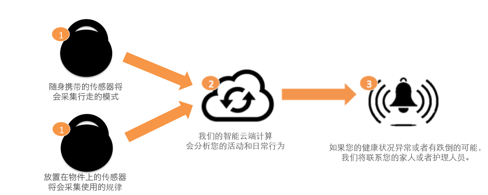

<section id="headline">
    <div class="container">
        <h3>How does it work
            <small></small>
        </h3>
    </div>
</section>

<section class="container">
    <hr class="vertical-space1">


    <section class="eleven columns offset-by-one rgt-cntt" id="side-content">
        <article>
            <h3 class="mex-title">先进的数据分析和健康进程监测
            </h3>

            <p>为了确保我们提供最高水平的护理，先进的分析引擎将利用我们的传感器收集的个人历史数据进行异常（日常行为）检测并为您的亲人预测摔倒的风险。
            </p>
            <br class="clear"/>

            <div class="sixteen columns">
                
            </div>

            <hr class="vertical-space1">

        </article>
    </section>

    {% include left-nav.html current_d="class='current'" %}


    <div class="white-space"></div>
</section><!-- container -->
